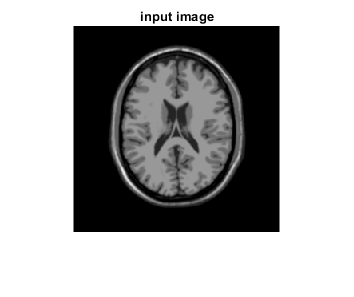
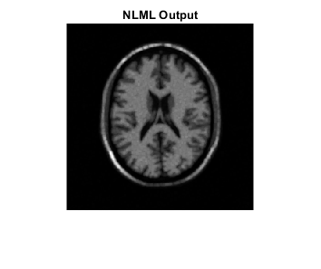
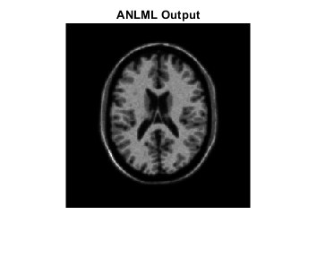

Contents
Prepare Workspcae
clear;
clc;
close all;
Input
I=imread('mri.png'); figure; imshow(I) title('input image') %check size of imag disp('size of image :') disp(size(I))
size of image : 258 258
add noise
coils = 4; noise = 20; I=double(I); [im, params, M0, Kn, K0]=phantom_parallel(I,4,20,.5,0,[2,32]); %%im=imresize(im,.5); figure,imshow(im,[]) title('noisy image')
Warning: Name is nonexistent or not a directory: C:\Users\fathi\OneDrive\Desktop\project MRI\mri denoising\common\common
algorithm -denoising
if size(im,3)==3 im=rgb2gray(im); end %size of image [r,c]=size(im); % Estimating the noise veriance via skwness sigma=Nsigmaest2(im); %number of coils L=coils; %update sigma sigma2=sigma*L; %normalize %No of non local neighboring pixels N=12; %Add zeros to the boundary im2=[im,zeros(r,N)]; OutNLML=im; OutANLML=im; %ML estimation for i=2:r-1 for j=2:c-1 %Signal estimation using NLML method A=im(i-1:i+1,j-1:j+1); mi=A(:); lnLA=lnL(mi,A,L,sigma2); A_ml=max(max(lnLA)); OutNLML(i,j)=A_ml; %signal estimation using adaptive NLML neigborsA=A(:); neigborsA(5)=[]; D=zeros(1,N); for n=1:N R=im2(i-1:i+1,j+n-1:j+n+1);%neigborhood region neigborsR=R(:); neigborsR(5)=[]; D(n)=dist( neigborsA',neigborsR); end D=sort(D); lnLsigma=lnL(D,A,L,sigma2); Diffsigma=abs(lnLsigma-sigma2); [minvalue,k]=min(Diffsigma(:)); OutANLML(i,j)=lnLA(k); end end figure,imshow(abs(OutNLML),[]);title( 'NLML Output'); figure,imshow(abs(OutANLML),[]);title( 'ANLML Output'); 
analysis
normalize and map into 0-255 range
OutNLML=uint8((OutNLML./mean(OutNLML(:)))*255); OutANLML=uint8((OutANLML./mean(OutANLML(:)))*255); %1.Structural similarity index measure OutNLML=double(OutNLML); OutANLML=double(OutANLML); ssimval = ssim(double(I),OutNLML); fprintf('NLML-Structural similarity index measure = %f\n',ssimval); ssimval = ssim(double(I),OutANLML); fprintf('ANLML-Structural similarity index measure = %f\n',ssimval); %2.Mean Squared Error %calculate the "square error" image. squaredErrorImage = (double(I) - double(OutNLML)) .^ 2; % Sum the Squared Image and divide by the number of elements % to get the Mean Squared Error. mse1 = sum(sum(squaredErrorImage))/numel(squaredErrorImage); fprintf('NLML-Mean Squared Error = %f\n',mse1); squaredErrorImage = (double(I) - double(OutANLML)) .^ 2; mse = sum(sum(squaredErrorImage))/numel(squaredErrorImage); fprintf('ANLML-Mean Squared Error = %f\n',mse); %3.Peak signal to Noise Ratio % Calculate PSNR from the MSE PSNR = 20 * log10( 256^2 / mse1); fprintf('NLML-Peak signal to Noise Ratio = %f\n',PSNR); PSNR = 20 * log10( 256^2 / mse); fprintf('ANLML-Peak signal to Noise Ratio = %f\n',PSNR); %4.Maximum Absolute Difference error =abs( double(I) - OutNLML); MAD = max(max(error)); fprintf('NLML-Maximum Difference = %f\n',MAD); error =abs( double(I) - OutANLML); MAD = max(max(error)); fprintf('ANLML-Maximum Difference = %f\n',MAD);
NLML-Structural similarity index measure = 0.240998 ANLML-Structural similarity index measure = 0.487524 NLML-Mean Squared Error = 6748.877336 ANLML-Mean Squared Error = 5315.817905 NLML-Peak signal to Noise Ratio = 19.744968 ANLML-Peak signal to Noise Ratio = 21.818197 NLML-Maximum Difference = 241.000000 ANLML-Maximum Difference = 197.000000